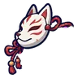
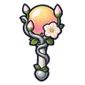

หมาจรเมืองหลวง
มอนธาตุไม่มีธาตุ Lv 68–80
เจอที่
| แมพ | โซน | Lv | ภูมิภาค |
|---|---|---|---|
| ย่านนอกกำแพง | 68–74 | เมืองหอระฆัง | |
| ย่านนอกกำแพง | หน้าประตูเมือง | 78–80 | เมืองหอระฆัง |
| ตลาดเช้าที่ไม่มีเช้า | 68–76 | เมืองหอระฆัง | |
| ย่านโรงฟอกหนัง | 68–76 | เมืองหอระฆัง | |
| คูเมืองน้ำนิ่ง | 68–76 | เมืองหอระฆัง |
ค่าสถานะตามเลเวล
| Lv | HP | ATK | DEF | MDEF | EXP | Job |
|---|---|---|---|---|---|---|
| 68 | 25,915 | 154–231 | 24 | 10 | 88 | 66 |
| 74 | 32,785 | 171–257 | 27 | 11 | 95 | 71 |
| 80 | 41,167 | 189–283 | 29 | 12 | 102 | 77 |
ตีด้วยธาตุไหนดี
แรงขึ้น: —
เบาลง: วิญญาณ ×0.25
วัตถุดิบที่ดรอป
| ของ | โอกาส | |
|---|---|---|
| ปลอกคอกระดิ่ง | 55% | 1 ชิ้น (15% ได้ 2) |
อุปกรณ์ที่ดรอป (7)
| ของ | โอกาส |
|---|---|
| ชุดเมฆราตรี (เสื้อ) | 0.15% |
| ชุดเมฆราตรี (กางเกง + รองเท้า) | 0.15% |
| 0.12% | |
| 0.12% | |
 หน้ากากจิ้งจอกเอียงข้าง | 0.08% |
 ออร์บรุ่งอรุณ | 0.06% |
| ชุดเมฆราตรี (ต่างหูเมฆฝน) | 0.05% |
สกิล
หอนเรียกฝูง (Lv 25+) · หอนเรียกฝูง (Lv 60+) · กระโจน (Lv 60+)